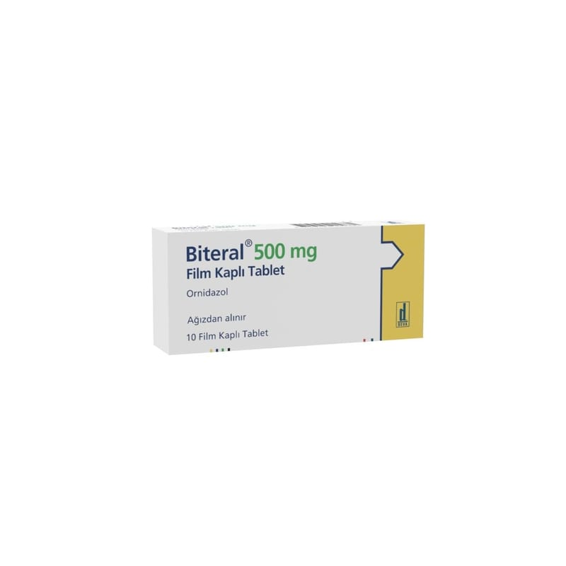

Biteral 500 mg Film Kaplı Tablet, 10 Adet

Ne için kullanılır
KT · Bölüm 1BİTERAL, ornidazol etkin maddesi içeren antibakteriyel (bakterilere karşı etkili) ve antiprotozoal (protozoonlara karşı etkili olan) bir ilaçtır.
BİTERAL tabletlerin her biri 500 mg ornidazol içermektedir.
BİTERAL, 10 tablet içeren ambalajlarda sunulmaktadır.
BİTERAL, aşağıda belirtilen durumlarda kullanılır: Amebiasis (ishal ve mide ağrıları ile seyreden parazit hastalığı), Ürogenital trichomoniasis (parazitik idrar yolu enfeksiyonu), Lambliasis (ishal ve yorgunluk ile seyreden parazit hastalığı), Tıbbi-cerrahi bir tedaviyle bağlantılı duyarlı bir mikroorganizma enfeksiyonu, Cerrahi bir prosedürle bağlantılı duyarlı mikroorganizma enfeksiyonu durumunda önleyici bir tedbir olarak, Enjekte edilebilir tedaviler için önleyici amaçlı tedbir tedavisi olarak.